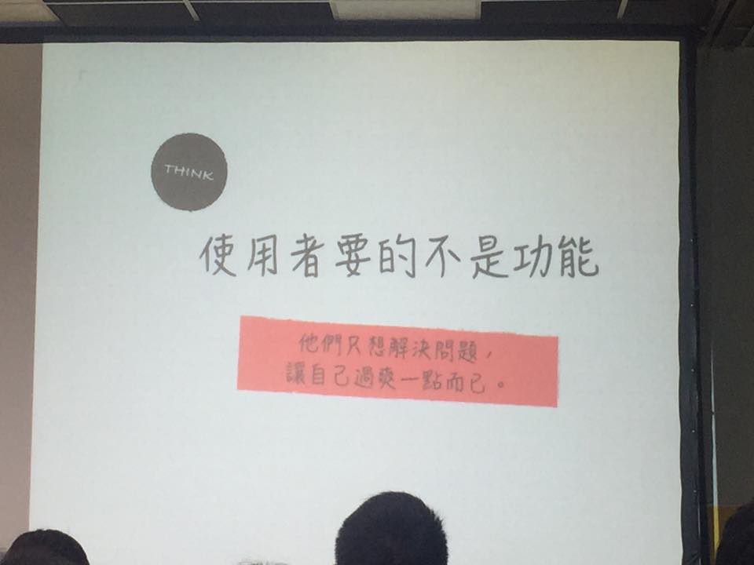
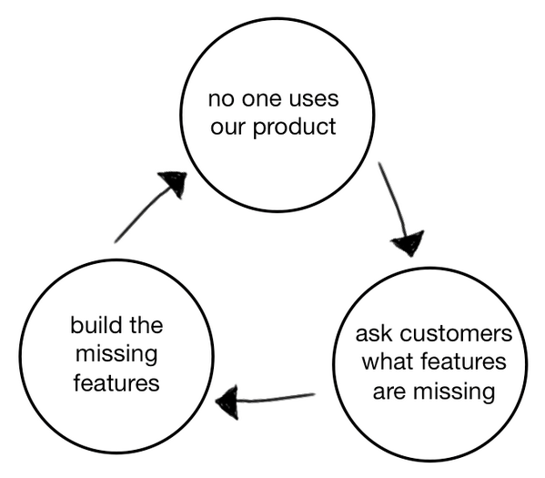
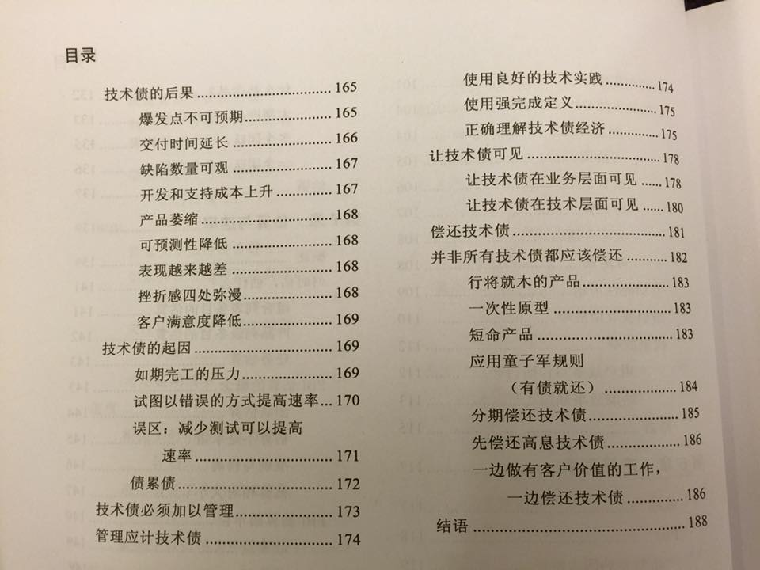

MoIssue #1 創始號：總要開始，才能完成
發刊日 : 2015/10/20 - 2015/10/31
本期包含趣味小語、資訊知事、行銷推廣、專案管理以及技術知事
發刊語 - murmur
會開始整理這份自己的Issue News 是突然發現，常常看到一些寫的很不錯的文章，而總覺得這些需要有一個地方把這些好文章總結記錄下來，一是如此在需要的時候才能順利的找到。有整理過的資訊，才能成為知識。所以開始試著整理這份文件，當累積一定的長度，就發刊。
想的到才看的到，團隊的集體創意需要不斷的累積背景知識，才能夠想，也才能一起看到。
趣味小語
相關小語來源是這段期間Twitter或訂閱的feedly上被分析出來的熱門文字。
越大的公司留下來的是會做人的人，並非會做事的人 - Juppet(@juppet) - October 23, 2015
使用者要的不是功能 - 他們只想解決問題，讓自己過的爽一點而已。 - October 31, 2015
- 
- 所以，為什麼先有功能，再來嫌使用者不會用？
- 功能只是解決問題的方法之一。
如果像這樣，我們稱這是「產品的死亡循環」：1. 沒人用產品 → 2.問使用者我們缺少了什麼功能 → 3.補足缺少的功能 → 4.回到第一點。原文：「”This is what I’m calling the product deathcycle.”」- 9:01 AM - 24 Oct 2015
- 
資訊知事
- 電腦玩物 - 一看就能採取行動的檔案命名技巧：我的兩大檔名規則
- 檔名規則一：數字與符號，排序重要、待辦、計劃、備查檔案
- 透過數字可以有效率的讓檔案依照我的檔名去排列，於是我就能用數字來達到兩個目的：
- 排序檔案或資料夾的重要性（愈重要的排在愈前面）。
- 把相關檔案放在一起（讓同一類檔案或資料夾排序在一起）。
- 透過數字可以有效率的讓檔案依照我的檔名去排列，於是我就能用數字來達到兩個目的：
- 檔名規則二：關鍵字，說明行動-主題-關鍵內容
- 行動：這個檔案目前需要採取什麼行動？如果沒有，可以不寫。
- 主題：這是什麼類型、屬性、需求、專案的檔案。
- 關鍵內容：這個檔案裡面有什麼獨特內容，可以從人事時地物的角度去想。
- 檔名規則一：數字與符號，排序重要、待辦、計劃、備查檔案
-
- 這份簡報在介紹整體 DevOps 到底在做些什麼事情，還蠻值得一看的。
- DevOps 這詞指的是開發(Development)與維運(Operation)的結合，根據 Wiki 上面的解釋：
是過程、方法與系統的統稱，用於促進開發（應用程式/軟體工程）、技術運營和質量保障（QA）部門之間的溝通、協作與整合。它的出現是由於軟體行業日益清晰地認識到：為了按時交付軟體產品和服務，開發和運營工作必須緊密合作。
逆流而上的 Offline-First 概念：跟 Network Connection Error 說拜拜
- 既然一個 App 要以網絡服務為賣點，其實就更應在早期建構時考慮到網絡不穩的問題，所以就出現了所謂 Offline-First 的概念。 Offline 不是一個 Bug，也不是一個Feature。 而是每一個手機應用程式都應該具有的基本 Support。
- 實際使用過 Offline-First 的設計後，你甚至會發現你的 App 和以往有一些明顯的差別：
- 不再出現莫名其妙的 Data Loss
- 任何時候都能運作正常
- 整個 App 用起來感覺更順暢更快速
- 三種處理情境：
- 顯示離線狀態（Offline State UI）
- 使用靜態資訊如常運作（Static Cache）
- 使用動態資訊進行暫時性作業（Dynamic Cache）
行銷推廣
- Google analytics教學手冊 - by Brian Chiu
- 作者小黑在業界關於SEO、行銷領域還蠻知名的，是之前電商ASAP的行銷總監。
網站經營的法則 - 掌握流量建立屬於你的經營模式（繁體中文）
- 這是一個 Udemy 的課程，這門課程的講師是知名科技網站癮科技的站長-吳顯二所開立。
- 這是一門關於網際網路經營法則的課程，裡面內含他加入這個產業十年的心得，也是關於「線上教學」的下一個實驗。
- 這門課呈現在只要1元美金，之後每更新一次課程內容，會加10元，絕對值得花時間去聽。
- 我買了
4個call to action測試，協助你提升電子報點擊率
- 顏色
- 挑選正確的顏色更能讓你的 call to action 更容易被注意到
- 大小、形狀
- call to action 的外觀是影響點擊率的因素之一。大小的設定沒有一定的標準答案，可以在電子報中嘗試調整大小所帶來的影響。然而，這裡建議至少是88 88 pixels (為了好記，或是 100 100 pixels)，才能方便手機使用者點擊。
- 合理的文字
- 哪種寫法才是正確的？我想答案是：符合當下情境，並能融入訂閱者的寫法。
- 位置
- 根據 ConversionXL 的研究，使用者花 80% 的時間會停在 above the fold上。試著調整 call to action 放在 above the fold 還是 below the fold，或許不同的點擊結果能讓你更了解自己的電子報。
- 持續測試
- 研究顯示，A/B 測試可以提升 49% 的轉換率，因此沒有必要害怕失敗
- 哪一種 call to action 才能真正符合訂閱者當下的情境，進而觸發點擊？或許你應該透過 A/B 測試問問他們。
- 參考案例
- stacksocial 的促銷電子報
- techbargains 的促銷電子報
- TigerDirect 的促銷電子報
- Zuzily 的促銷電子報
- fromyouflowers 的促銷電子報
- Groupon 的促銷電子報
- 顏色
- Agile Marketing Meetup: Moving Beyond the Marketing Plan So You Remain Relevant
- 這個投影片談到 growthhacker.com 是使用怎樣的流程做自己的 growth，很多細節如怎麼產生 ideas，怎麼為 task 評分，怎麼學習測試結果等，都值得參考。
專案管理
-
- 所謂的反模式指的是讓整個團隊、專案往反方向前進
- 書摘：
- 業務思維偏愛短期利益
- 不合群就會被釘上十字架
- 軟件架構師成為政客
- 忍受痛苦是你提供的商品
- 周圍的同事不支持變革
- 總是有人伺機“削（Undercut）”你
- 責任心被剝奪
- 方法論成為管理工具
文章：實務技術債務管理
- 技術債發生的原因：
- 產生債務：例如-代碼重複、違反靜態工具規則和代碼異味。
- 設計和架構債務：例如-設計異味、違反設計規則和違反架構規則。
- 測試債務：例如-缺乏測試、測試覆蓋面不足和不正確的測試設計。
- 文檔債務：例如-沒有重大問題的文檔、缺乏文檔和文檔過期。
- 戰略債務：-這種類型的債務是在知情的狀況下為了戰略利益（例如首次市場發行）而產生，並長期存在。
- 戰術債務：-這種類型的債務是在知情的情況下為了快速收益而產生，通常適用於短期。
- 疏忽債務：-不慎產生的債務通常是在不知情的情況由於缺乏知識和意識而產生。
- 增量債務：-定期不慎產生的債務導致增量債務。
- 償還技術債
- 識別、記錄和追踪債務
- 優先處理異味
- 在每個迭代中分期償還債務
- 激勵和獎勵員工保持品質
- 遵循“男孩的童子軍規則”
- 留意可能出現的大規模的債務償還
- 平地償還債務而不是垂直地
- 在某些情況下不償還債務
- 書籍：Scrum 技術精髓
- 
- 技術債發生的原因：
-
- 如果不能从帮助团队获得满足感，那么就不要成为一名领导者
- 将自己视为其他开发人员的导师
- 随时准备好回答团队成员的问题
- 减少具体的编码工作，但仍然要编码
- 要谦逊
- 要诚实
Your developers aren’t slow - 有時候進度緩慢，不見得是開發者的問題 from ant
- 進度落後不是開發者的錯，工作流程可能才是兇手！ - inside 翻譯的中文版文章
- Unclear requirements - 不明確的需求
- Changing requirements - 需求一直變更
- Context switching - 太常打擾工程師，破壞了他們高速開發所需的專注力
- Take responsibility - 給管理者的
- Help your team understand the vision - 讓整個團對瞭解未來的目標及願景。
- Write well-defined user stories - 定義及撰寫好的規格及使用者故事。
- Reduce context switching costs - 降低工作人員進行資訊交換的成本。
- 這篇的來源作者是一個線上音樂網站的首席架構師，在他的討論串中他也提到了他們公司怎麼做：
1 | 我們工程師不常開會但很常溝通。開會通常有四種原因 |
技術知事
開發心法
How to write unmaintainable PHP code - 如何寫出無法維護的 PHP 程式碼
- Ban coding conventions.
- No comments.
- Standardize on Notepad.
- No unit testing.
- No templating engine.
- Version control.
- Build a framework.
-
- 好的架構不是設計出來的而是演進出來的
- 中等規模：流量跨過十萬的階段，數據庫成為瓶頸
- 大流量：將整個Windows 技術體系轉向了Java 體系
- 當架構變成「蜘蛛網」，人肉已很難搞定！
-
- PSR-1: Basic Coding Standard - 基本的PHP程式碼撰寫標準規範
- PSR-2: Coding Style Guide - PHP程式碼撰寫標準規範
- PSR-3: Logger Interface - PHP 在實作 Log 的介面規範
- PSR-4: Improved Autoloading
- PHP 在 5.3版之後，實作了 Autoloading ，讓PHP程式透過一定結構可以自動載入，不用到處 include ，但由於明確定義規則，因此坊間 Library 有點亂，因此 FIG 定義了這部分的規範。
- PSR-7: HTTP Message Interfaces
- PHP 程式可以自行定義 Web 頁面間 Server - Client 的訊息傳遞，如 HTTP Header 但並沒有明確規範格式，因此 FIG 定義了這部分的規範。
- 其它還有尚未定義完成的還有 Cache、Security Reporting…
台灣 developers 建立的 free/open source project 蒐集列表
- 這邊蒐集了很多台灣開發者們建立的開源專案，舉凡程式語言框架、網站服務、桌面應用程式、CLI程式、瀏覽器外掛等等。
- Software Development Notes
- 系統開發工具列表，這邊蒐集了：系統維運、監控、開發、整合的一堆工具
測試工具
-
- 如果你面對的是以前舊有的 PHP 程式，它改起來很痛苦，一堆不良的 PHP 程式習慣都阻礙你的修正；使得每次調整功能時，到底改得對不對，得要等到上線才知道。想要重寫一個新版本，但太多的實作細節你不清楚；也沒有最新的規格文件，讓你無法為新版本做出功能無誤的保證。
- 現在你唯一擁有的，就是已經在線上運作的程式邏輯；雖然它可能還有 bug ，但至少大多數的功能是通過使用者驗證的。那麼先為它買個保險吧！確保之後的修改不會影響到其他功能的正常運作；而最直接的方式，就是把目前程式邏輯所呈現的結果或是使用者的操作，寫成自動化 Web 測試。
-
- PhatomJS 很適合拿來作一些網頁介面的自動化測試 (但由於是整合 WebKit，所以無法測試 IE 或者 FF 所呈現的情況)，此外網頁截圖這件事也是很吸引人的小功能。
- 參考網站：使用PhantomJs產生網頁擷圖
- 參考網站：PhantomJS 初體驗
- 參考網站：用 PhantomJS 作 Web 自動化測試
-
- 一個可以用PHP 5.3以上版本操作瀏覽器的測試工具
- Web浏览器模拟测试：Mink
12 Best PHP Automated Test Frameworks
- Selenium - 自動化的瀏覽器呈現頁面測試
- PHPUnit - PHP單元測試框架
- Behat - 知名的 BDD (behavior driven development) 測試框架，目標是，定義好規格之後，直接用定義的規格作測試，是一個專案經理、客戶與開發者間，很方面的一個溝通及定規格工具。
- Kahlan - 全功能的單元測試及BDD工具測試框架工具。
- Atoum - 單元測試工具
- Codeception - 全功能的測試工具、框架，方便做各種測試
- SimpleTest - 簡單而容易使用的小測試框架，可以用在 TDD 測試先行開發及一般的單元測試。
- Storyplayer - 一個全端的測試框架。
- Peridot - 一個輕量的測試框架，是一個事件驅動的框架。
- PHO - 一個BDD測試框架。
- Mockery - 在 PHP Unit Test 裡常常使用的模擬元件工具。
- PHP Specs - 一個用定義規格，來進行程式測試的 BDD 框架。
PHP Library or 工具
- 使用PHP進行 PDF to HTML轉換
- 在 PHP 將 PDF 檔案轉為 HTML 檔
- 底層使用Poppler
- PHP 5.3+
- Carbon
- 在處理程式上，處理「時間」非常好用的套件
- PHP 5.4+
- PHP UUID Generation class
- Awesome PHP
- 群眾一起整理出來的PHP的各種結構或工具的懶人包，需要什麼功能都可以上去看看
- PHP type comparison tables
- 寫PHP的時候常常會不小心因為型別的比較細節而造成一些誤判，在官方整理了PHP各種型別比較的結果，忘記了可以來這邊查詢。
- PHP Design Patterns 1.0 from JaceJu
- 這本電子書介紹了各種 Design Patterns 如何在 PHP 上的實作，也提到各種實務上的例子。
- 但還是要記住： Design Patterns 重意不重形，也不該特意使用。要先理解待解決的問題是什麼，分析出當下能滿足的設計；而不是一開始就思考怎麼用模式去解決問題，並拘泥於模式的實作方式。
Multiple Authentication in Laravel 5.1
- 利用 Sarav/Multiauth 這個套件讓你的 Laravel 應用程式支援多重身份，這樣一來前台和後台就可以用不同的身份登入了。
前端網頁開發工具
- Front-end Handbook
- 記錄許多前端開發工具及相關教學
- Front-end Tools
- 前端開發工具整理
- CodePly
- 實驗各前端框架 RWD 的好地方，也可以當成簡易的前端頁面開發工具使用。
- HTTP Status Cat
- 用貓來比喻 HTTP協定的各種狀態 LoL